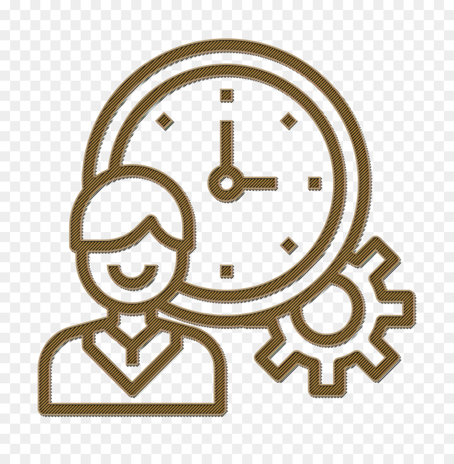

Achieving Success in a New Frontier
Ultimately, any students goal is to be successful in their academic endeavors. Having clear, well-defined and achievable goals, as well as proper time management are simple ways to set yourself down the right path.
Time Management
Time management is key to being successful in the online learning environment. Without proper time management, one can easily fall behind in their studies.
Consider the following tips when preparing for your online class:
- Set reasonable goals
- Maintain a clean workspace
- Organize your tasks in a to-do list or planner
- Be mindful of your time
Goal Setting

Setting goals is important because it gives a person attainable goals with a clear path. Without this many just roam in indifference